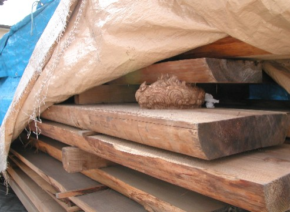
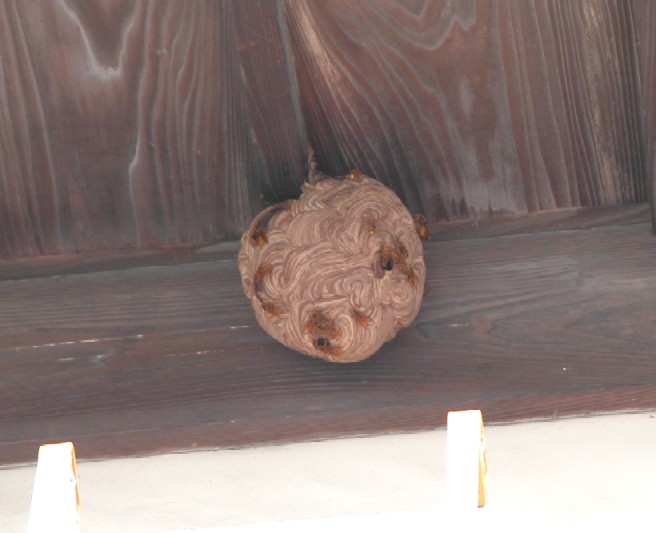
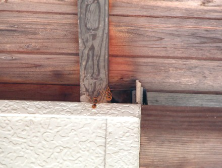
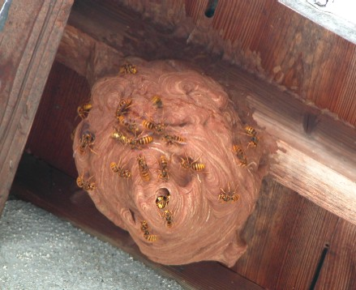
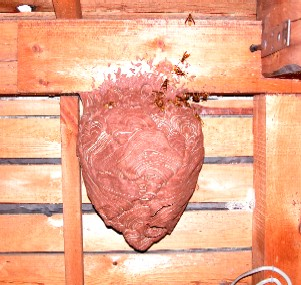
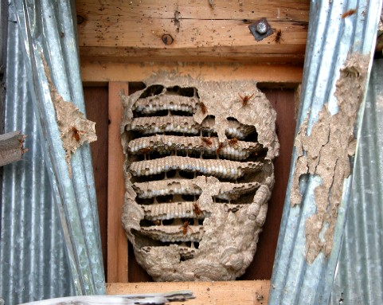

スズメバチの引越しにご注意ください！
・夏ごろ、民家ではキイロスズメバチでよく観察される現象。
・始めは家の屋根裏・壁の中・土の空洞・床下などの閉鎖空間に巣が作られる。
・が大きく成長する際に、今までの場所が狭いと、屋根の軒下などの解放空間に引越しを行う。
・働き蜂がたくさんいるため、引越し後の巣づくり・巣の成長は非常に早い。
簡単な例を紹介しますが、以下の写真をご覧下さい。

材木屋の積んである木の隙間に営巣するキイロスズメバチ引越しを実行し、屋根の軒下へ移動

引越し後、屋根の軒下に営巣するキイロスズメバチ
始めは積んである隙間にキイロスズメバチは営巣していました。
しかし場所は狭く、今後営巣を続けるにはちょっと窮屈すぎると判断したのでしょう、隣の家の、屋根の軒下への引越しを決めたようでした。
もちろんこの二つの巣に住むキイロスズメバチたちは皆同じ巣の家族なので、働き蜂はこの二つの巣を行き来していました。
これがキイロスズメバチの引越しです。
ここで私が依頼を受け、このキイロスズメバチの巣を捕ってしまいましたのでここで営巣はストップしてしまいましたが、このまま放っておけば、軒下の巣は秋には40～50ｃｍクラスのキイロスズメバチの巣へ成長していたかもしれません。
他にもこんなパターンがあります。

屋根裏の巣へ出入りをするキイロスズメバチ引越しを実行し、屋根の軒下へ移動

軒下のキイロスズメバチの巣
一度屋根裏に巣を作り営巣後、ある程度規模が大きくなったところで、同じ家の屋根の軒下へ引越しをしたパターンです。
こちらも先ほどと同じように、屋根裏の働き蜂と軒下の働き蜂は同じ巣の仲間で、どちらの巣も行き来していました。まさにキイロスズメバチの引越しです。
スズメバチの引越しにご注意ください！
以前住んでいた会津でもキイロスズメバチの発生は非常に多く、同じ家で引越し前と後の巣が見つかる例が多数ありました。
巣の規模が大きくなったり、引越しをし目立つところに営巣したところで初めてスズメバチの巣があることに気が付くようです。
引越しをする段階ではもう既に働き蜂がたくさんいる状態なので、無茶をしてご自分で駆除などはしない方が無難です。
引越しに気が付かず大きくキイロスズメバチの巣を育てますと、右上の写真のように、こんなにいい感じの巣が出来上がります。
全てのキイロスズメバチが引越しを行うわけではないようです。初めに営巣した場所にある程度の広さがあると引越しは検討しないようです。
右の中央の写真の場合は、天井裏に非常に大きな空間があるので引越しせず、この場所で営巣していました。
天井裏は広々としていることが多く、条件が合えば、このようにこの最適な空間を利用し、キイロスズメバチは大きな巣を作ってしまいます。
右下の写真は、小屋のトタンの内側に営巣していた、キイロスズメバチの巣です。こちらは左右方向にまだ空間があるので、引越しをしていません。
ここまで大きくなるだけの場所がありますので、引越しを選ばなかったようです。
このスズメバチの引越し行動は、危険の多い女王蜂単独での営巣を、温度も保ちやすく、隠れたところで安全に行い、働き蜂がたくさん羽化し、気候も暖かくなると、みんなで協力し新しい巨大な巣を最速で作ります。
様々な条件をうまく使い、的確に行動している点が素晴らしいですね。
引越しを行うのはキイロスズメバチだけではありません。モンスズメバチで頻繁に、チャイロスズメバチでも見られます。
 軒下に出来た大きなキイロスズメバチの巣
軒下に出来た大きなキイロスズメバチの巣

天井裏に営巣するキイロスズメバチの巣
壁の中のキイロスズメバチの巣-
生け捕り捕獲など

-
種類や生活史・巣の場所等

-
被害者や対策・対応等

-
すずめばちやについて